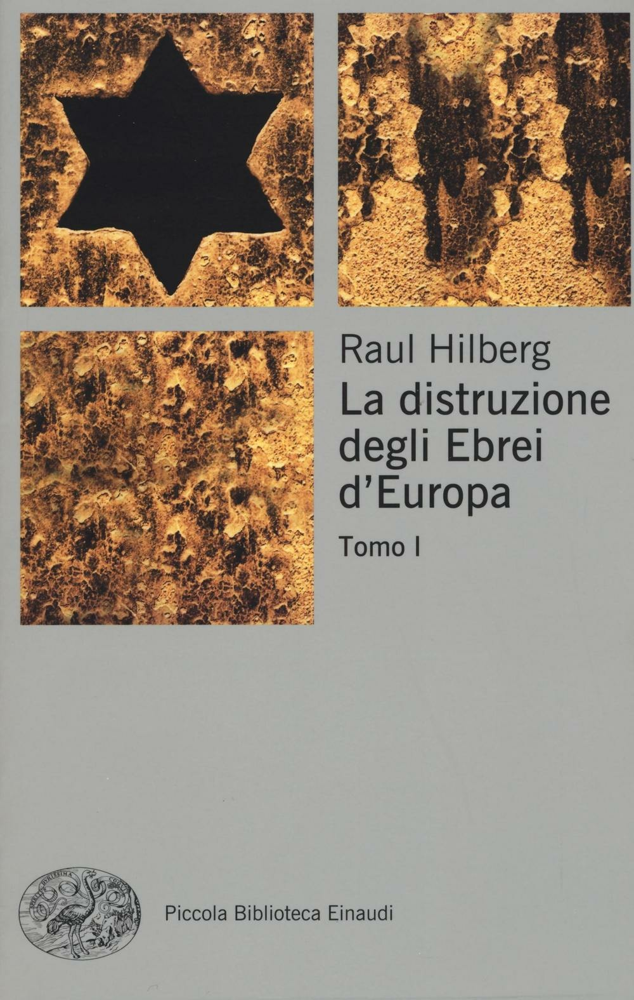

10:16 · 2 OPERE
L’ideologia è un nemico sottile della libertà di pensiero.
Il filo del discorso
L’ideologia è descritta come un ostacolo alla libertà di pensiero quando trasforma una convinzione in una risposta impermeabile agli argomenti. Dr Divago distingue il confronto delle idee dalla ripetizione di formule e prende l’antisemitismo come caso di una visione che resiste alle prove contrarie. I riferimenti a Hilberg e a un articolo di Noah Feldman accompagnano la riflessione sul capro espiatorio. Il finale invita a mettere alla prova le proprie rappresentazioni e a riconoscere il carattere appreso di molti giudizi.
I libri nel discorso

La distruzione degli ebrei d’Europa
Note sul riferimento
Copertina del tomo I: Einaudi · 2017 · copertina del tomo I
L’opera è pubblicata in tre volumi. L’immagine mostra il tomo I dell’edizione Einaudi di riferimento; l’edizione usata nel video non è identificata.
Autore e titolo sono esplicitamente nominati.

I cosiddetti sani
Identificazione probabile
Note sul riferimento
Copertina: Mondadori, 1997 · Oscar saggi
La formula i cosiddetti sani è accostata a Fromm; il collegamento al titolo resta probabile.